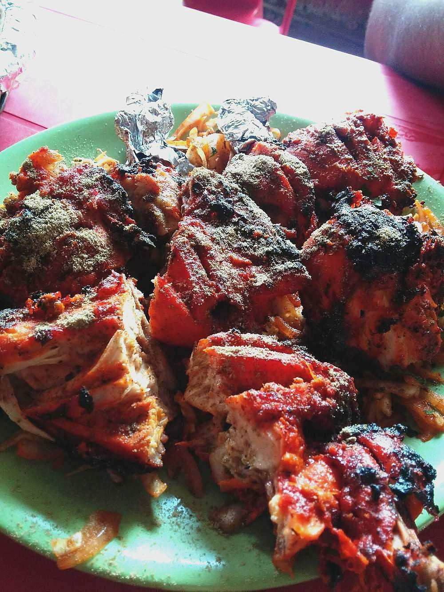

Tandoori-Style Chicken
yogurt and chilli marinated chicken charred hard at the edges, done in a home oven

Start the day before. The marinating alone is 8 hr, against 70 min of actual work.
Contains: milk, mustard
Ingredients
Quantities for 4.
- 1kg, bone-in legs and thighs, skin removed and slashed to the bone Chicken
- 200g, thick and hung 30 minutes in a cloth Yogurt
- 2 inch, made into a paste with the garlic Ginger
- 10 cloves Garlic
- 2 tbsp Kashmiri Chillifor the deep red colour without fierce heat
- 1 tsp Chilli Powder
- 1 tsp Garam Masala
- 1 tsp Cumin Powder
- 1 tsp Coriander Powder
- 1/2 tsp Black Saltoptional
- 1 tbsp, crushed Kasuri Methi
- 2, one juiced and one in wedges Lemon
- 3 tbsp, heated to smoking and cooled Mustard Oil
- 1.5 tsp Salt
- 30g, melted, for basting Butteroptional
Cookware
oven, stovetop
Checked against the ingredient list for ten allergens: milk, egg, fish, crustaceans, tree nuts, peanuts, sesame, mustard, soy and gluten. Brands vary, so read the label on anything new to you.
Before you start
- Slash each piece to the bone three times. The marinade has to reach the middle or the meat inside stays bland.
- Marinate at least 6 hours and ideally overnight in the fridge.
- Take the chicken out of the fridge 30 minutes before it goes in the oven so it cooks evenly.
- Heat the mustard oil until it smokes, then cool it completely; raw mustard oil is harsh.
Method
- Rub the chicken with the lemon juice, 1 tsp salt and 1 tsp of the kashmiri chilli, and leave 20 minutes.This first rub seasons the meat itself. The yogurt layer mostly sits on the surface.
- Whisk the hung yogurt with the ginger-garlic paste, remaining chillies, garam masala, cumin, coriander, black salt, crushed kasuri methi, cooled mustard oil and remaining salt.
- Coat the chicken thoroughly, working the marinade into every slash, then cover and refrigerate overnight.
- Heat the oven to its maximum, at least 240C, with a rack set near the top and a tray of water on the floor of the oven.The water tray keeps the meat from drying out while the outside chars.
- Arrange the chicken on a wire rack over a foil-lined tray, shaking off pooled marinade.
- Roast 20 minutes, until the surface is dry and starting to blacken at the edges.
- Turn the pieces, baste with melted butter, and roast another 15 minutes.
- Test the thickest thigh: the juices should run clear and the meat pull easily from the bone.If the outside is charring too fast, drop the heat to 200C and give it longer.
- Rest 5 minutes, then finish under a hot grill for 3 minutes for extra char if you want it.
- Serve with lemon wedges, raw onion rings and green chutney.
Safe temperatures: Chicken and duck are done at 74°C / 165°F, taken at the thickest part and clear of the bone. Reheat leftovers to 74°C / 165°F. FoodSafety.gov
Storage
Keeps 3 days refrigerated. Reheat in a 200C oven for 10 minutes to bring the edges back; microwaving makes it soggy. Raw marinated chicken freezes 1 month.
Nutrition Good estimate
High protein: 57 g a serving, 45% of the calories
| Per serving340 g | Per 100 g | |
|---|---|---|
| Calories | 514 kcal | 152 kcal |
| Protein | 57.3 g | 17 g |
| Carbohydrate | 9.8 g | 3 g |
| of which sugars | 2.9 g | 1 g |
| Fibre | 2.7 g | 1 g |
| Fat | 27.1 g | 8 g |
| of which saturated | 8.3 g | 2 g |
| of which unsaturated | 15.6 g | 5 g |
Nearest database match used for black salt, garam masala. Estimated from raw ingredients using USDA FoodData Central.
More like this: Gluten-free Indian recipes · Punjabi recipes
Times, yields, allergens and nutrition are guidance. Use your own judgement on doneness and on storing. More in About.